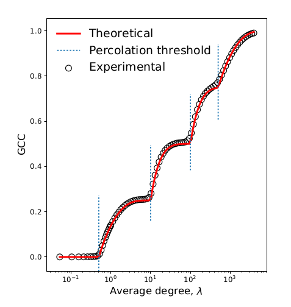

Our paper on clustering was accepted into Physical Review E.
The paper look at “clustered” networks such as you find in human social interactions,m and how they affect processes like the propagation of diseases. These are easy to study in simulation but not easy to predict ahead of time, which is one of the main goals of network science.
Peter, the main author, managed to extend the state-of-the-art to get good theoretical descriptions of various use cases. The details are in the paper, but the effects are clear in this graph:

The fact that the experimental circles land right on top of the theoretical line, even as the system shows multiple phase transitions over its evolution, shows how good the model is.